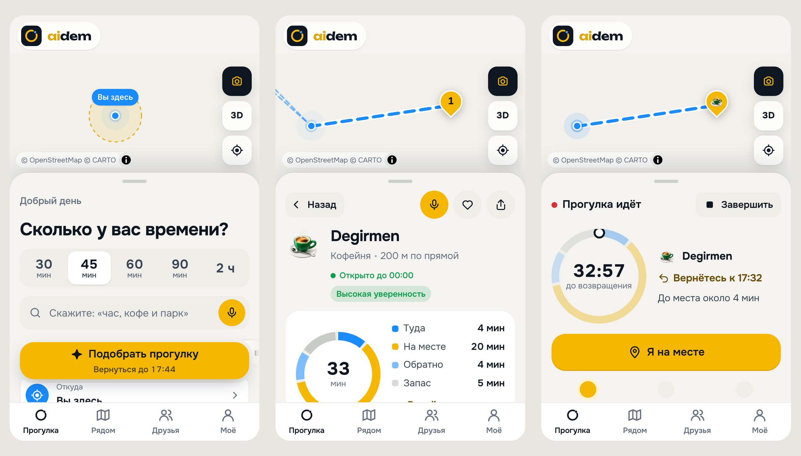
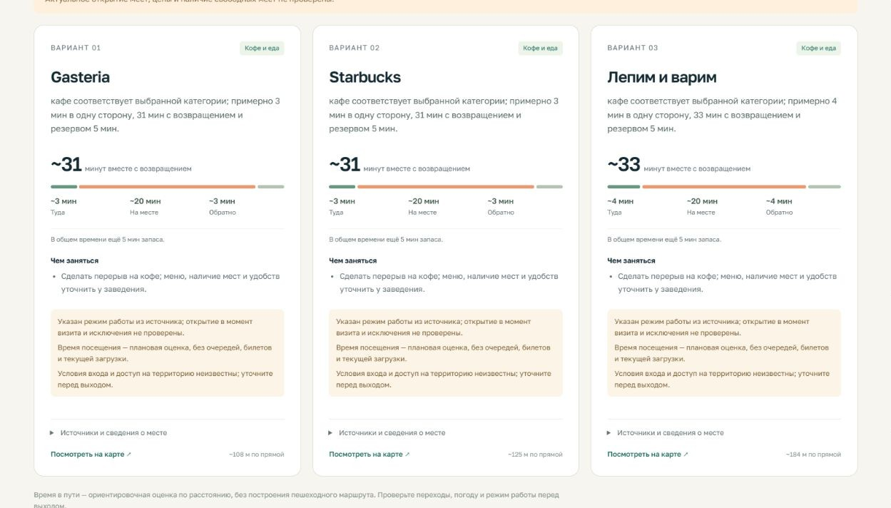
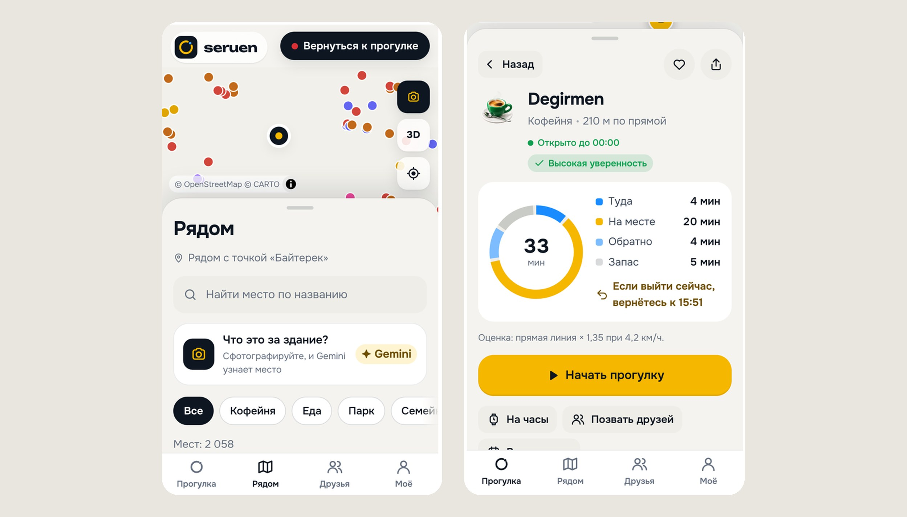
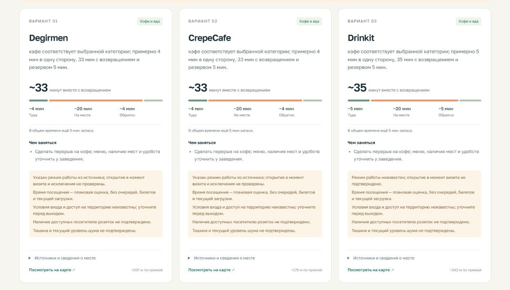

Прогулка по Астане,
ровно на ваше время.
ИИ-помощник для коротких прогулок по Астане: 1–3 реальных места, которые помещаются в ваше время вместе с дорогой назад.

Сотни точек на карте. Ни одного ответа «куда мне сейчас».
У Mega Silk Way
Кофе и передышку
Вернуться к входу D
Одно правило: прогулка целиком помещается в ваше время.
Кофе за 45 минут
- 3реальных кафе из OpenStreetMap
- ~31минута вместе с возвращением
- ✓часы работы проверены на всё время визита

С ребёнком, не дальше 10 минут
- 1подходящее место, а не три ради количества
- 40минут из 60: 10 + 15 + 10 + 5
- ?безопасность и оснащённость не придумываем

Поздно, нужна розетка
- ≠нет тега в данных, значит «неизвестно», а не «да»
- ≠нет часов работы, значит не «открыто сейчас»
- ↗у каждого места ссылка на запись OSM

Модель объясняет только то, что нашёл поиск.
OSM + Overture
Сбор скриптами, дубли сведены, источник у каждой записи
Отбор кандидатов
Категория, текст запроса на RU/KZ/EN, расстояние
Время и часы
Бюджет прогулки и режим работы на весь визит
Объяснение «почему»
Видит только найденные записи; ID источников сверяются
Карточки
Факты из данных отдельно от сгенерированного текста
Видно, откуда каждый факт.
Точка старта не уходит в модель
Gemini получает запрос и публичные места, без координат пользователя
Ничего не храним
Нет истории запросов и маршрутов; друзья видят вас только на время встречи
Неизвестное так и называется
Часы, розетки, доступность: «нужно проверить», а не догадка
Лимиты от злоупотреблений
8 запросов в минуту с адреса, 500 в сутки; поиск работает и без ИИ

автотестов проходят: поиск, часы и погода, друзья и встречи, часы на руке, приватность и лимиты
Честные ограничения
- Время пешком оценочное: расстояние × 1,35 при 4,2 км/ч, без построения маршрута
- OSM может быть неполным или устаревшим: часы это запись источника, не факт «открыто»
- Бесплатный ключ Gemini: для реального запуска нужен проект с биллингом
Что может пойти не так и что мы делаем.
Устаревшие часы и данные
Метка источника и уверенность на карточке; нет данных, значит «неизвестно», а не «открыто»
ИИ ошибается
Gemini только объясняет; места, время и часы считает и сверяет сервер. Без ИИ ответ всё равно есть
Приватность друзей
Только по согласию и на время встречи, «перестать делиться» в одно касание, истории нет
Зима до −30
Погода в подборе: в мороз, снег и дождь обычный запрос уходит под крышу
Бесплатные лимиты
Gemini и Cloudflare на бесплатных тарифах; при запуске биллинг, поиск работает и без ИИ
Мало данных о доступности
Фильтр для коляски берёт теги OSM; где тегов нет, так и пишем
Из прогулки в инструмент для города.
Точнее время
Пешеходные маршруты вместо оценки по прямой, больше проверенных полей о местах
Голос и афиша
Голосовой запрос на казахском, события города прямо в подборе
Карта спроса для НИЦ
Обезличенные запросы показывают, каких мест городу не хватает. Пилот с кампусами и гостиницами
Бесплатно для людей. Платит тот, кому нужны данные и гости.
НИЦ Smart City, акимат
Обезличенная карта спроса: что ищут, где и когда не находят. Подписка на аналитику
Отели, кампусы, конференции
Seruen под их брендом: «куда сходить за 45 минут» от входа. Плата за подключение
Кафе, музеи, ТРЦ
Подтверждённые часы и описание. Платят за проверенную карточку, не за место в выдаче
Аудитория: жители и гости Астаны с коротким окном. В 2025 году город принял 1,6 млн туристов, из них больше 380 тыс. иностранных.
Попробуйте прямо сейчас.
ascension-smartwalk.azamatbreach.workers.dev
github.com/Azalytical/ascension-smartwalk
youtu.be/EKrwOn43a5w